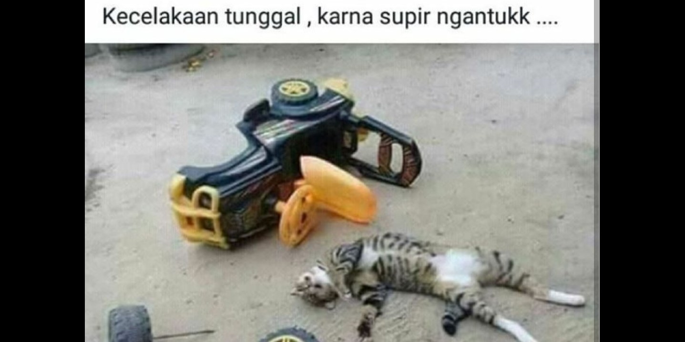
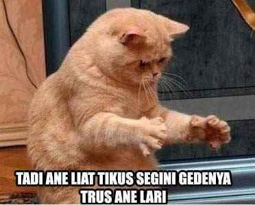

Ini Gue
 Koching Oren Bar Bar
Koching Oren Bar Bar

Gue belajar tinju kayak Mike Tyson
Ini hasilnya
Gua juga punya cita cita pengen jadi Initial D

ini bukan kecelakaan, Gua cuman tidur tiduran

Keponakan

Paman
Crow Zero Neko